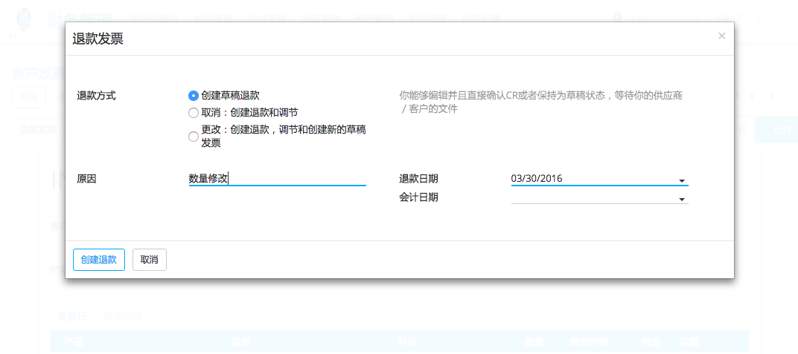
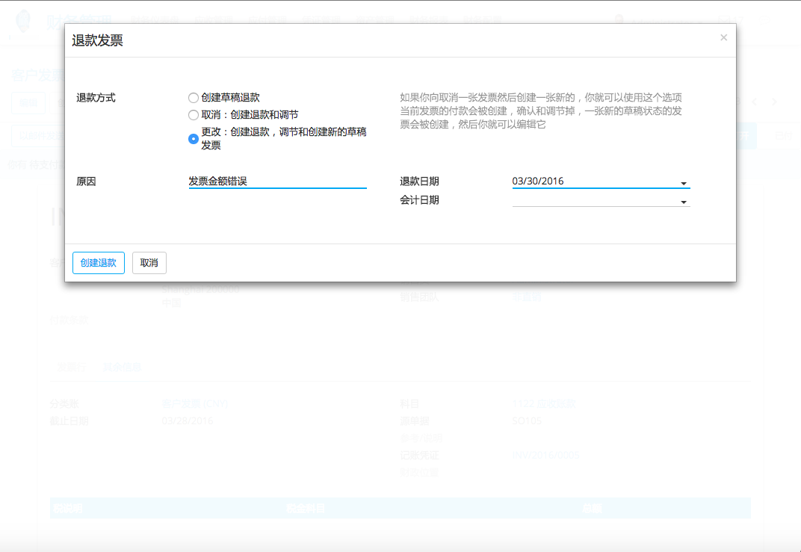
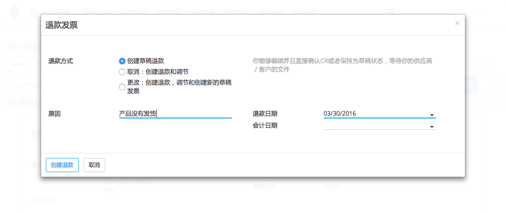

In YuanCloud, it's not possible to modify an invoice that has been validated and sent to the customer. If a mistake was made on a validated invoice, the legal way to handle that is to refund the invoice, reconcile it with the original invoice to close them and create a new invoice.
修改验证发票
If you need to modify an existing invoice, use the Refund Invoice button on the invoice. In the refund method field, select "Modify: create a refund, reconcile, and create a new draft invoice".
YuanCloud会自动：
创建退款发票
- Reconcile the refund invoice with the original invoice (marking both as Paid)
创建一个新的发票草案可以修改
然后，你可以修改发票草案，并对其进行验证，一旦它是正确的。
取消发票
If you need to cancel an existing invoice, use the Refund Invoice button on the invoice. In the refund method field, select "Cancel: create a refund and reconcile".
YuanCloud会自动：
创建退款发票
- Reconcile the refund invoice with the original invoice (marking both as Paid)
没有别的需要做的事情。您可以发送退款通过普通邮件或电子邮件给你的客户，如果你已经发送的原始发票。
发票的再融资部分
如果您需要退还部分现有发票，使用发票的退款发票按钮。在退款方法域，选择'创建退款草案'。
YuanCloud会自动创建一个退款草案。你可以修改的退款（例如：删除您不想退还线），并对其进行验证。然后，发送退款通过普通邮件或电子邮件给你的客户。
小技巧
Refunding an invoice is different from refunding a payment. Usually, a refund invoice is sent before the customer has done a payment. If the customer has already paid, they should be reimbursed by doing a customer payment refund.